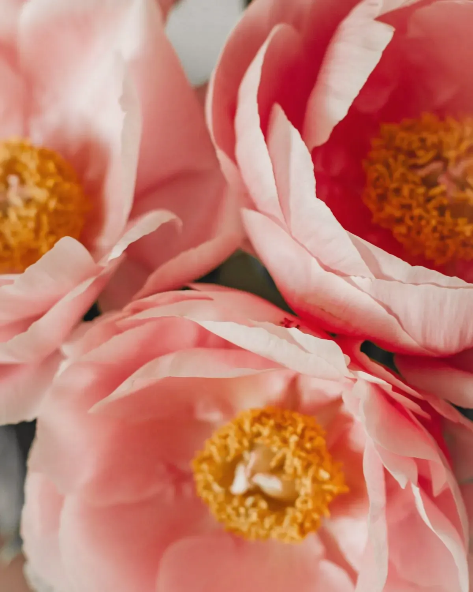
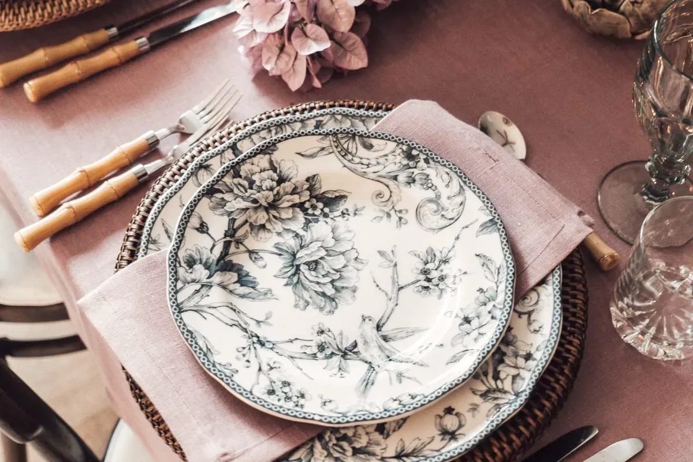
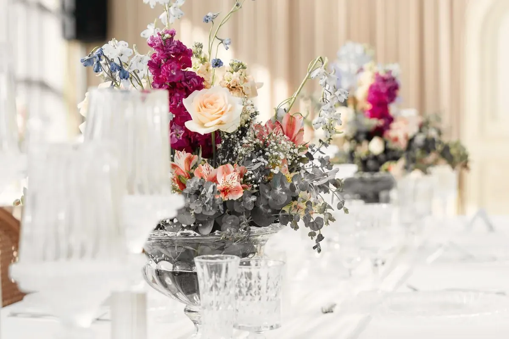

All the lookseach one with its palette, its flowers and my opinion
These are designs I make, shown in pictures by the photographers named under them. None of them is a record of someone’s wedding.
The Pink Table

A long table, low flowers so people can actually see each other, and glasses with some texture so the candlelight has something to do. It only works if you commit to it.
Ranunculus, garden roses, anemones, sweet peas, and more pink napkins than you think you want.
Pink isn’t a shy colour. I put more of it on the table than you asked for, and you’ll thank me.
Start with this look
Hydrangea Hour

Big soft heads of hydrangea in the colours they go when they’re nearly over, which is when I like them. It’s a look for people who want the room to feel relaxed and slightly overgrown.
Hydrangea, sweet peas, anemones, and a lot of linen.
Hydrangeas sulk the second they’re thirsty, so I bring buckets and I don’t apologise.
Start with this look
Powder Room

Powder blue with a chalky pink underneath, in small glasses, lots of them. It’s quiet from across the room and very pretty up close, and it needs a room with good daylight.
Hydrangea, anemones, garden roses in the palest shade going, and whatever blue the week gives me.
True blue flowers are rare and they know it. I’ll tell you what’s honest that week.
Start with this lookButter & Bramble

Butter yellow with something dark and scratchy running through it, so it doesn’t turn into a nursery. It’s the look I’d pick for a party that plans to go late.
Garden roses, ranunculus, anemones, and bramble stems when the hedges will give them up.
Yellow makes people talk louder. Put it near the dance floor.
Start with this lookLilac, Loose

Nothing symmetrical, nothing wired into place. Stems in plain vases, a bit too tall, leaning where they want to lean. It takes me longer than a tidy arrangement, which nobody ever believes.
Lilac when I can get it, sweet peas, stocks, ranunculus, and a little butter to keep it awake.
If it looks like I arranged it, I take it apart and start again.
Start with this look
Stocks and Gingham

Checked cloth, proper plates and fat bunches of stocks in every colour they come in. It’s a lunch-in-the-garden look that I’ve also put in a ballroom, and I’d do it again.
Stocks, stocks and more stocks, with peonies if the dates line up.
I grow the stocks myself. They smell of cloves and they make people lean in.
Start with this look